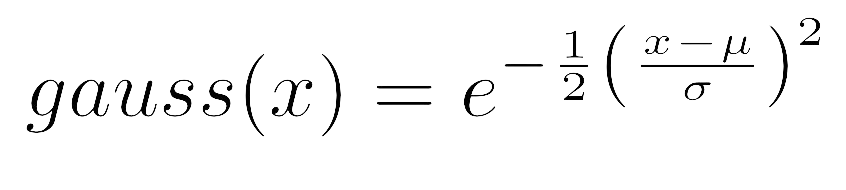
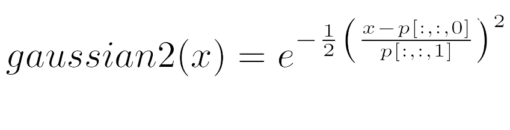
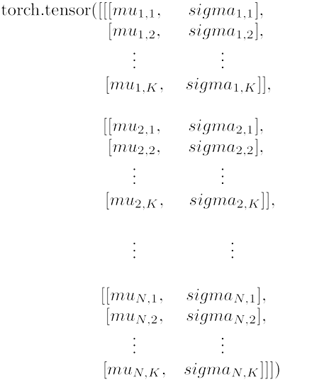
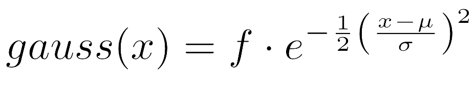
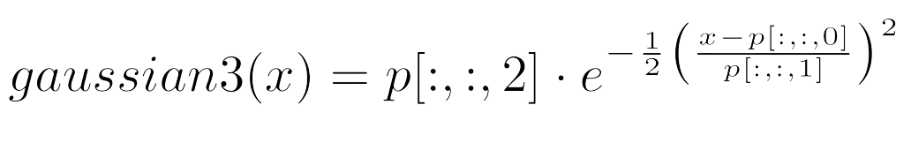
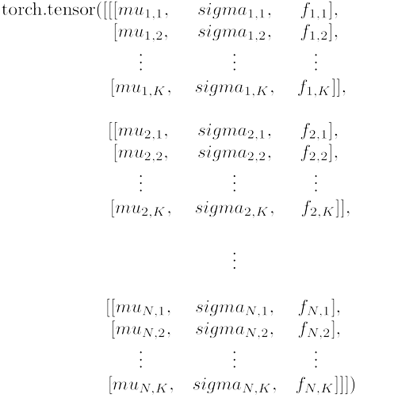
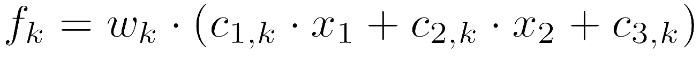
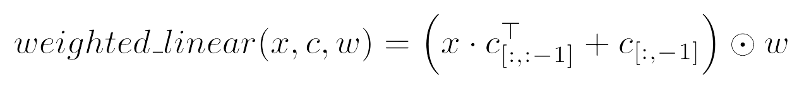
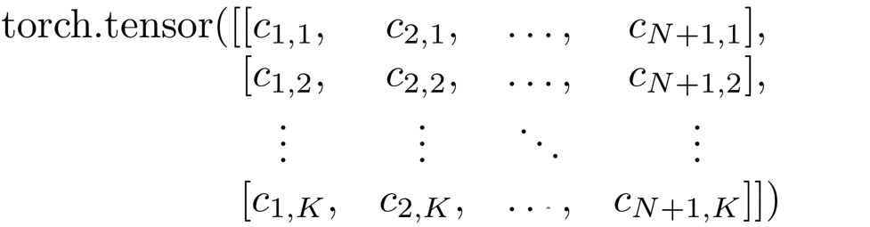

ANFIS Package
Functions
- anfis.functions.gaussian2(x, p)[source]
It is used as a membership function and calculates gaussian values based on the input data and premise parameters of the ANFIS model (membership degrees). Emulates the following gaussian function:

- Parameters:
x (torch.tensor) – Tensor of input data.
p (torch.tensor) – 3D parameter tensor containing ‘mu’ and ‘sigma’ parameters by data dimension and by ANFIS rule.
- Returns:
Tensor with resulting gaussian values.
- Return type:
torch.tensor
Explanation: This function calculates gaussian values based on the input data x and the parameters p. It ensures that the standard deviation values in p are not zero by replacing them with a small value (1e-6). The formula used to compute the gaussian values is:

Note
If p[:, :, 1] is zero, it is replaced with 1e-6 to prevent division by zero.
The premise parameters of the ANFIS model are autogenerated, but it is important to keep in mind that, considering that the input data has N dimentions and there are K rules on the model, its structure is as follows:

{kind=link}
{kind=link}
{kind=link}
- anfis.functions.gaussian3(x, p)[source]
It is used as a membership function and calculates gaussian values based on the input data and premise parameters of the ANFIS model (membership degrees). Emulates the following gaussian function:

- Parameters:
x (torch.tensor) – Tensor of input data.
p (torch.tensor) – 3D parameter tensor containing ‘mu’, ‘sigma’ and ‘f’ (as scalar) parameters by data dimension and by ANFIS rule.
- Returns:
Tensor with resulting gaussian values.
- Return type:
torch.tensor
Explanation: This function calculates gaussian values based on the input data x and the parameters p. It ensures that the standard deviation values in p are not zero by replacing them with a small value (1e-6). The formula used to compute the gaussian values is:

Note
If p[:, :, 1] is zero, it is replaced with 1e-6 to prevent division by zero.
The premise parameters of the ANFIS model are autogenerated, but it is important to keep in mind that, considering that the input data has N dimentions and there are K rules on the model, its structure is as follows:

Warning
The model functions and algorithms are not designed to support this membership function, they are all designed to work with the gaussian2.
{kind=link}
{kind=link}
{kind=link}
- anfis.functions.weighted_linear(x, c, w)[source]
Compute the weighted linear combination of input features and coefficients (representing the consequent parameters of the ANFIS model). Its used to calculate the individual outputs ‘f k’ of each rule ‘k’ of the ANFIS model. Emulates the following calculation for all the rules:

Where ‘c i,k’ is the ith consequent parameter of the k-th ANFIS rule, ‘x j’ is the jth dimention of the input data ‘x’ and ‘w k’ is the normalized firing level of kth rule asociated to the input ‘x’ obtained in previous layers of the model. This operation is applied to each of the ANFIS rules simultaneously.
- Parameters:
x (torch.tensor) – Tensor of input data.
c (torch.tensor) – Coefficients tensor for the linear combination (consequent parameters).
w (torch.tensor) – Weights tensor for element-wise multiplication.
- Returns:
Resulting weighted linear combination.
- Return type:
torch.tensor
Explanation: This function calculates the weighted linear combination of the input features x and the coefficients c. It involves matrix multiplication of the input features by the transposed coefficients (excluding the last column), adding the last column of coefficients, and then element-wise multiplication by the weights w. The formula used to compute this function is:

Note
The weights w are applied element-wise.
The consequent parameters of the ANFIS model are autogenerated, but it is important to keep in mind that, considering that the input data has N dimentions and there are K rules on the model, its structure is as follows:

{kind=link}
{kind=link}
{kind=link}
Layers
- class anfis.layers.FuzzifyLayer(x_train, init_rules=1, mf=<function gaussian2>, params=['mu', 'sigma'], init_mode=0)[source]
Bases:
ModuleFuzzification layer of an Adaptive Neuro-Fuzzy Inference System (ANFIS) model.
Attributes:
- input_size
The size of the input features.
- Type:
int
- dtype
The data type of the input data (used to initialize the premises with it)
- Type:
torch.dtype
- mf
Membership function to use.
- Type:
callable
- Default:
gaussian2
- params
List of parameter names for the membership function.
- Type:
list
- Default:
[‘mu’, ‘sigma’]
- premises
Trainable parameters for the fuzzification layer.
- Type:
torch.nn.Parameter
Example Usage:
>>> input_data = torch.randn((3, 4)) >>> fuzzify_layer = FuzzifyLayer(input_data, init_rules=3) >>> membership_values = fuzzify_layer(input_data)
Methods:
- forward(x)[source]
Performs a forward pass through the fuzzification layer.
- Parameters:
x (torch.tensor) – Input tensor.
- Returns:
Output tensor (membership values).
- Return type:
torch.tensor
- init_premises(x_train, init_rules)[source]
Initializes the fuzzy premises based on input training data.
- Parameters:
x_train (torch.tensor) – Training data for initializing fuzzy premises.
init_rules (int) – The number of initial fuzzy rules.
- Returns:
Initialized fuzzy premises.
- Return type:
torch.tensor
- property premises_structure
Prints the structure of the fuzzy premises.
- class anfis.layers.FiringLevelsLayer[source]
Bases:
ModuleClass for calculating firing levels in an Adaptive Neuro-Fuzzy Inference System (ANFIS) model.
Example Usage:
>>> firing_levels_layer = FiringLevelsLayer() >>> firing_levels = firing_levels_layer(membership_values) #assuming 'membership_values' is the tensor obtained from the Fuzzification Layer
Methods:
- class anfis.layers.NormalizationLayer[source]
Bases:
ModuleClass for normalize the firing levels in an Adaptive Neuro-Fuzzy Inference System (ANFIS) model.
Example Usage:
>>> normalization_layer = NormalizationLayer() >>> norm_firing_levels = normalization_layer(firing_levels) #assuming 'firing_levels' is the tensor obtained from the Firing Levels Layer
Methods:
- class anfis.layers.ConsequentLayer(input_size, dtype, init_rules=1, function=<function weighted_linear>)[source]
Bases:
ModuleClass for representing the fourth layer (consequent layer) of an Adaptive Neuro-Fuzzy Inference System (ANFIS) model.
Attributes:
- function
Consequent function to use
- Type:
callable
- Default:
weighted_linear
- consequents
Trainable parameters for the consequent layer.
- Type:
torch.nn.Parameter
Example Usage:
>>> input_data = torch.randn((5, 3)) # Assuming input tensor shape (batch_size, num_input_features) >>> consequent_layer = ConsequentLayer(input_data.shape[1], input_data.dtype, init_rules=2) >>> output = consequent_layer(input_data, weights) # Assuming weight is the tensor obtained from the normalization layer with shape (batch_size, num_rules)
Methods:
- property consequents_structure
Prints the structure of the consequent parameters.
- class anfis.layers.OutputLayer[source]
Bases:
ModuleClass for representing the last layer (output layer) of an Adaptive Neuro-Fuzzy Inference System (ANFIS) model.
Example Usage:
>>> output_layer = OutputLayer() >>> output = output_layer(rule_outputs) # Assuming rule_outputs is the tensor obtained from the consequent layer with shape (batch_size, rules)
Methods:
ANFIS Implementation
- class anfis.anfis.Type3ANFIS(x_train, init_rules=1, cf=<function weighted_linear>, mf=<function gaussian2>, mf_params=['mu', 'sigma'], init_mode=0, binary_output=False)[source]
Bases:
ModuleClass for representing a type 3 Adaptive Neuro-Fuzzy Inference System (ANFIS). Its made up of the following layers:
Layers:
- fuzzification_layer(FuzzifyLayer(nn.Module))
- firing_levels_layer(FiringLevelsLayer(nn.Module))
- normalization_layer(NormalizationLayer(nn.Module))
- consequent_layer(ConsequentLayer(nn.Module))
- output_layer(OutputLayer(nn.Module))
- last_layer(nn.Identity() or nn.Sigmoid())
This last layer is what determines whether the output of the model is binary or not.
Other attributes:
- input_size
The size of the input features.
- Type:
int
- dtype
The data type of the input data (used to initialize the premises with it)
- Type:
torch.dtype
- mf_params
List of parameter names for the membership function.
- Type:
list
- Default:
[‘mu’, ‘sigma’]
- init_state
Dictionary with the initial values of both premises and consequents.
- Type:
dict
To initialize it:
The parameters that must be taken into account are the following:
- Parameters:
x_train (torch.tensor) – Input training data set.
init_rules (int) – Number of initial rules (default: 1).
cf (callable) – Consequent function to apply (default: weighted_linear).
mf (callable) – Membership function to apply (default: gaussian2).
mf_params (list) – List of membership function parameters (default: [‘mu’, ‘sigma’]).
init_mode (int) – Numeric flag for initializing the fuzzy premises (default: 0, meaning it will be initialized based on the input data, otherwise it will be initialized randomly).
binary_output (boolean) – Boolean flag for using a sigmoid layer after the output layer for establish binary outputs for the model. (default: False, meaning that the last layer of the output will be an identity layer)
Example Usage:
>>> input_data = torch.randn((5, 3)) # Assuming input tensor shape (batch_size, num_input_features) >>> anfis_model = Type3ANFIS(input_data, init_rules=2) >>> output = anfis_model(input_data)
Methods:
- property consequents
Returns the consequents of the consequent layer as a torch.tensor.
- property consequents_structure
Prints the structure of the consequents.
- forward(x)[source]
Performs a forward pass through the ANFIS model.
- Parameters:
x (torch.tensor) – Input tensor.
- Returns:
Final output.
- Return type:
torch.tensor
- intermediate_values(x)[source]
It emulates a forward pass to obtain the intermediate values of the ANFIS, specifically the outputs of each rule and the firing levels (both their original and normalized values).
- Parameters:
x (torch.tensor) – Input tensor.
- Returns:
w (torch.tensor): Firing levels.
w_norm (torch.tensor): Normalized firing levels.
outputs (torch.tensor): Outputs by rule of the model
- property premises
Return the premises parameters of the fuzzify layer as a torch tensor.
- property premises_structure
Prints the structure of the premises.
- property rules
Returns the number of rules in the system.
Training Module
- class anfis.train.EarlyStopping(patience, delta=0, last_state=False)[source]
Bases:
objectEarly stopping mechanism for training algorithms of an Adaptive Neuro-Fuzzy Inference System (ANFIS) model.
Attributes for initialization:
- patience
Number of epochs with no improvement after which training will be stopped.
- Type:
int
- delta
Minimum change in the monitored quantity to qualify as an improvement.
- Type:
float
- Default:
0
- last_state
Sets whether early stopping sets the model to its latest state (otherwise sets the model to its best state).
- Type:
bool
- Default:
False
Methods:
- class anfis.train.OLS(epochs, gamma=0.01, loss_function=<function mse_loss>, optimizer=None, optim_params=None, validation=0, early_stopping=None)[source]
Bases:
objectOrdinary Least Squares (OLS) optimizer for training an Adaptive Neuro-Fuzzy Inference System (ANFIS) model.
Attributes for initialization:
- epochs
Number of training epochs.
- Type:
int
- gamma
Learning rate for premises update.
- Type:
float
- Default:
0.01
- loss_function
Loss function for premise parameters training.
- Type:
torch.nn.Module
- Default:
nn.functional.mse_loss
- optimizer
Optimizer to use for updating premise parameters.
- Type:
torch.optim.Optimizer
- Default:
None
- optim_params
User preference parameters for the optimizer.
- Type:
dict
- Default:
None
- validation
Proportion of the training data to use for validation.
- Type:
float
- Default:
0
- early_stopping
An early stopping instance for the OLS algorithm.
- Type:
- Default:
None
Other attributes
- train_history
Training loss and various measures history.
- Type:
torch.tensor
- val_history
Validation loss and various measures history.
- Type:
torch.tensor
Example Usage:
>>> train_loader = data.DataLoader(data.TensorDataset(x_train, y_train), batch_size = 8) >>> input_data = loader.dataset.tensors[0] #x_train from loader >>> anfis_model = Type3ANFIS(input_data, init_rules=3) >>> optimizer = torch.optim.AdamW >>> optim_params = {'lr': 0.001, 'weight_decay': 0.001} >>> ols = OLS(epochs=20, optimizer=optimizer, optim_params=optim_params) >>> ols(anfis_model, train_loader)
Methods:
- apply_optimizer_parameters(optimizer)[source]
Apply custom optimizer parameters to the provided optimizer.
- Parameters:
optimizer (torch.optim.Optimizer) – The optimizer to which parameters are applied.
- consequentsUpdate(ANFISmodel, loader, freezed=None)[source]
Updates the consequent parameters of the ANFIS model using OLS method.
- Parameters:
ANFISmodel (Type3ANFIS) – An instance of the Type3ANFIS model.
loader (torch.utils.data.DataLoader) – Data loader for training.
freezed (torch.tensor or None) – Binary tensor indicating which rules are freezed (default: None).
- obtain_metrics(ANFISmodel, train_loader, val_loader)[source]
Obtain and record various metrics such as loss and performance measures for training and validation sets.
- Parameters:
ANFISmodel (Type3ANFIS) – The ANFIS model.
train_loader (torch.utils.data.DataLoader) – Dataloader for training set.
val_loader (torch.utils.data.DataLoader) – Dataloader for validation set.
- Return loss:
The calculated loss.
- Rtype loss:
torch.tensor
- premisesUpdate(ANFISmodel, loader, freezed=None)[source]
Updates the premise parameters of the ANFIS model using OLS method or a user preference gradient descent algorithm.
- Parameters:
ANFISmodel (Type3ANFIS) – An instance of the Type3ANFIS model.
loader (torch.utils.data.DataLoader) – DataLoader containing training data.
freezed (torch.tensor or None) – Binary tensor indicating which rules are freezed (default: None).
- val_partition(loader)[source]
Create separate training and validation dataloaders based on the validation split ratio.
- Parameters:
loader (torch.utils.data.DataLoader) – The original dataloader.
- Returns:
train_loader (torch.utils.data.DataLoader): Dataloader for training.
val_loader (torch.utils.data.DataLoader): Dataloader for validation.
- anfis.train.obtain_measures(ANFISmodel, x, y)[source]
Calculates various evaluation measures for the ANFIS model’s predictions.
- Parameters:
ANFISmodel (Type3ANFIS) – The trained ANFIS model.
x (torch.Tensor) – Input data tensor.
y (torch.Tensor) – Target output tensor.
- Returns:
Dictionary containing different evaluation measures.
- Return type:
dict
Note
- If the model its used for a regression problem, the returned measures will be the following:
mse: mean squared error
rmse: root mean squared error
nmse: normalized mean squared error
mape: mean absolute percentage error
mae: mean absolute error
R2: R2 score
IA: Index of Agreement
- If the model its used for a binary classification problem, the returned measures will be the following:
bce: binary cross entropy
accuracy
precision
recall
f1 score